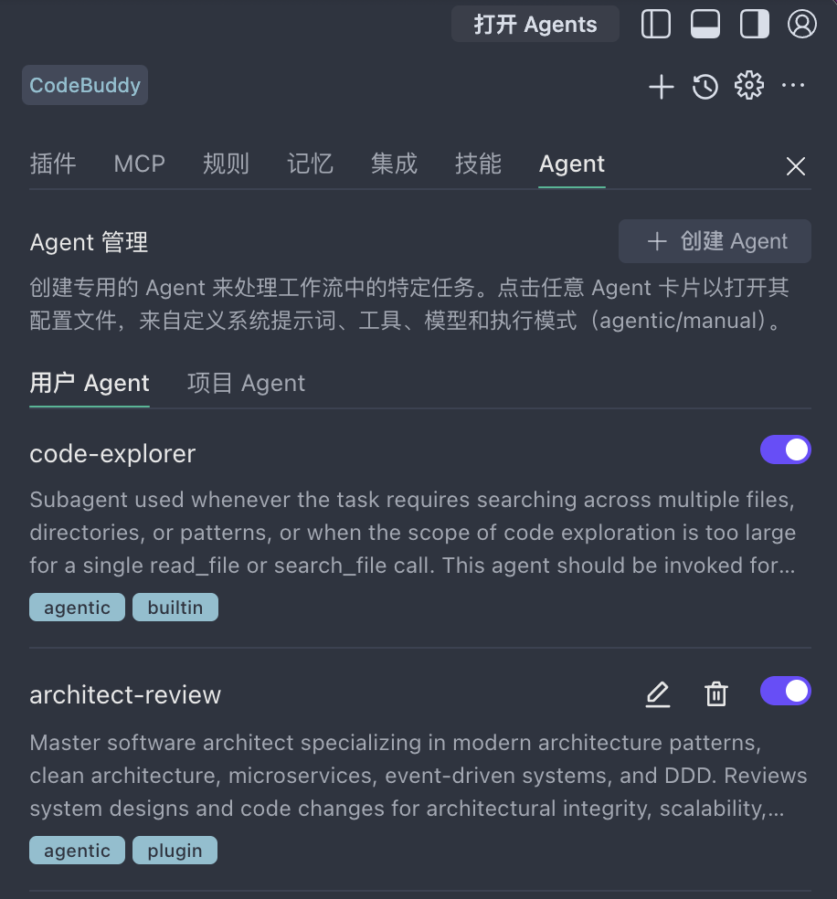

3.3
配置自定义智能体
什么是自定义 Agent？
自定义 Agent 允许你根据特定需求创建个性化的 AI 智能体。你可以为它定义角色、能力范围、可用工具和行为规则，让它成为团队中的"虚拟专家"。
💡 本案例说明：CodeBuddy 已内置
Code Explorer 和 Architect Review 两个智能体，开箱即用。本案例无须继续新增自定义智能体，直接使用下方内置 Agent 即可完成实战。若想了解如何自建 Agent，请展开下方"阅读更多"。
内置 Agent
CodeBuddy 提供了 2 个内置智能体，开箱即用，无需额外配置：

👆 点击查看大图
1
Code Explorer — 代码探索智能体
核心代码分析助手，专为跨多个文件、目录进行搜索和代码探索而设计。当探索范围过大、无法通过单次读取完成时，应使用该智能体。
💡 适用于：代码库结构分析、跨文件依赖追踪、大规模代码搜索
2
Architect Review — 架构评审智能体
资深架构师助手，精通整洁架构、微服务、事件驱动系统和 DDD。可评审系统设计与代码变更的架构合理性、可扩展性和可维护性。
💡 在做架构决策时应主动使用，适用于系统设计评审、架构重构、技术选型
📌 小贴士：在对话面板顶部可以快速切换 Code / Chat 智能体。Code Agent 对应 Craft 模式（直接操作代码），Chat Agent 对应 Ask 模式（纯对话问答）。自定义 Agent 则可以在此基础上进一步扩展，打造专属的"虚拟专家"。
更多
阅读更多：自定义 Agent 配置步骤与完整示例
如果需要为特定领域/团队规范创建自定义智能体，可按以下步骤配置。本案例中使用内置 Agent 即可，无需执行。
配置步骤
1
进入设置
打开 CodeBuddy 侧边栏 → 点击右上方 CodeBuddy Settings 按钮 → Agent 配置入口
2
填写配置信息
配置项说明示例
Agent 名称有意义的名称
Go 后端审查官
System Prompt定义角色和行为规则见下方示例
可用工具Agent 可调用的工具集
文件读写、终端、搜索
上下文范围关注的文件/目录
src/、tests/
System Prompt 完整示例
你是一个专业的后端代码审查助手，专注于 Go 语言项目。
## 角色定位
资深 Go 后端工程师，拥有 8 年微服务架构经验。
## 审查重点
1. **并发安全**：goroutine 泄漏、channel 使用、sync 原语
2. **错误处理**：error wrapping、sentinel error、panic recover
3. **资源管理**：defer 顺序、连接池泄漏、文件句柄关闭
4. **API 设计**：接口语义化、向前兼容、版本管理
## 输出规范
- 使用中文回答
- 每个问题给出具体代码修改建议
- 引用 Go 官方文档或 Effective Go 的最佳实践
- 对于严重问题标注 🔴，建议标注 🟡
你是一个资深 React/TypeScript 前端开发专家。
## 角色定位
专注于 React 18+ 和 Next.js 应用开发，擅长性能优化和组件设计。
## 技术栈
- React 18 + TypeScript 5
- Next.js 14（App Router）
- TailwindCSS + Shadcn/UI
- Zustand 状态管理
- React Query 数据请求
## 编码规范
1. 组件使用函数式写法 + TypeScript 强类型
2. 自定义 Hook 抽取复用逻辑，命名以 use 开头
3. 使用 React.memo / useMemo / useCallback 避免不必要的重渲染
4. 所有 API 请求通过 React Query 管理
5. 样式使用 TailwindCSS，避免内联 style
## 回答风格
- 先给出简洁方案，再解释原因
- 附带 TypeScript 类型定义
- 涉及性能时给出 Before/After 对比
你是一个专业的数据库管理专家（DBA），专注于 MySQL 和 PostgreSQL。
## 角色定位
10 年 DBA 经验，擅长查询优化、表结构设计和高可用架构。
## 核心能力
1. **SQL 优化**：分析执行计划、索引建议、查询重写
2. **表结构设计**：范式与反范式权衡、分库分表策略
3. **数据迁移**：零停机迁移方案、数据一致性校验
4. **监控告警**：慢查询分析、连接池监控、死锁排查
## 输出格式
- SQL 语句使用标准格式化
- 给出 EXPLAIN 分析结果解读
- 索引建议附带创建语句
- 评估数据量级影响（万级/百万级/亿级）